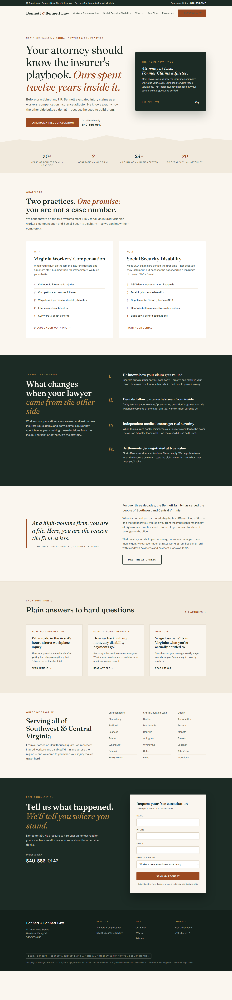

A homepage concept for a fictional two-attorney workers' compensation firm, demonstrating the approach I bring to content-heavy legal sites: editorial typography, positioning-first hierarchy, and consultation CTAs that feel like a natural next step rather than a hard sell.
Bennett & Bennett Law (fictional): a father-and-son workers' compensation and disability firm in Southwest Virginia. Strong substance — three decades of practice, affordable payment plans, and one genuinely differentiating fact: the younger partner spent twelve years as an insurance claims adjuster before becoming an attorney.
The challenge given to the design: make that "came from the other side" credibility land within the first screen, keep an educational, editorial feel, and turn a content-heavy page into a conversion path without a hard sell. This is the same problem most small law firms have — great substance, invisible on their own website.

The full homepage concept: serif editorial hero built around the insider credential, trust-stat strip, structured practice areas, a dark "Inside Advantage" section, and a persistent consultation path.
The insider credential is the headline ("Your attorney should know the insurer's playbook. Ours spent twelve years inside it."), a standalone credential card, and a four-point section. Positioning first; decoration never.
Fraunces (serif display) paired with Public Sans — polished headlines over highly readable body text. Content-heavy legal sites win on trust, and type is the fastest trust signal on the page.
Every section ends where the reader naturally arrives: a free consultation. Sticky header CTA, inline section links, and a closing form with a response-time promise — conversion architecture without pressure tactics.
One HTML file, lean CSS, two font families, no page builder, no jQuery, no sliders. Content is visible without JavaScript; animations are progressive enhancement. Built the way a maintainable custom WordPress theme should be.